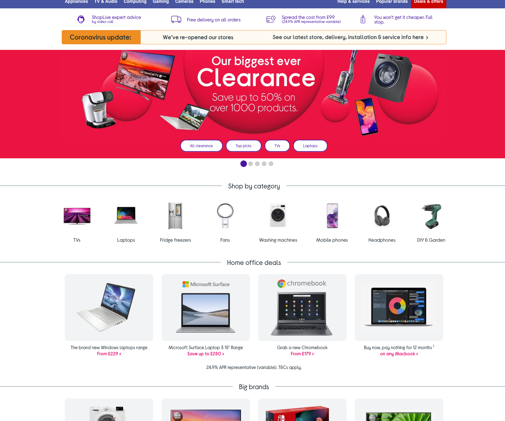

Over the last few years I have been responsible for many redesigns on the homepage, a process that has required a lot of patience - but that has resulted in a significant increase in click through rate.
This process included:
- Analysis into current design, using Adobe Analytics & Decibel heatmaps
- Research into competitor executions
- Mock-ups created in Sketch
- Presented to and signed off by all stakeholders
- Redesigns communicated to relevant teams
- Coded in HTML & Sass
- Testing with BrowserStack
Homepage when I joined in 2017 vs now:


I have also been responsible for 5* homepage takeovers, some examples of which can be seen below.
This process included:
- Communicating with brands to ensure we recieved the assets we needed, when we needed.
- Built from scratch using HTML & Sass, often created in a matter of hours.
- Lots of coffee! ☕